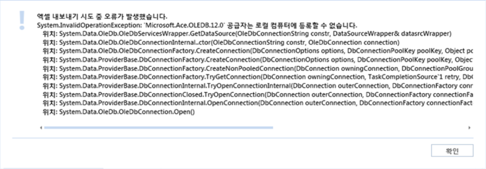
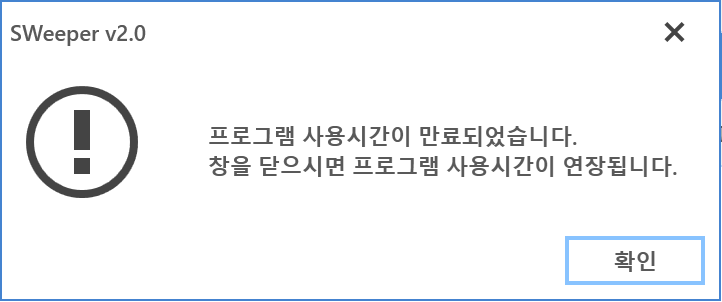

12-4 기타
12-4 기타
Source: https://www.sweeper.or.kr/etc/manual/12-4.html
12-4 기타
12. FAQ ››


- 엑셀 2007 통합문서로 양식 다운로드(내보내기) 시 오류가 발생합니다.
간혹 오피스 2013이 설치된 관리콘솔 PC에서 양식 다운로드시, OLEDB 관련 오류가 발생하는 경우가 있습니다. 이것은 SWeeper 프로그램 결함이 아닌 오피스의 데이터 연결 구성요소가 없기 때문입니다.

참고사항
이와 같은 현상은 소프트웨어-라이선스, 자산-구매목록, 자산-자산목록, 자산-실사목록, 설정-사용자 관리에서 동일하게 나타날 수 있습니다.
- 엑셀 방식 변경
SWeeper 2.1.8.1 버전부터 기존 OLEDB 방식이 아닌, NPOI 라이브러리를 이용합니다. 이후로 엑셀이 설치되어 있지 않은 장비에서도 엑셀 업로드/다운로드가 가능합니다.
- 관리콘솔이 자동 종료되었습니다.
관리콘솔 프로그램은 보안강화를 위해, 처음 접속후 60분이 지나면 자동 로그오프 되도록 하고 있습니다. 이것은 관리자가 부재중일 때 누군가 조작을 하지 못하도록 하기위한 조치입니다.
이때 로그오프 전, 종료하지 않고 연결 유지할 것인지 묻는 팝업 메시지를 보여주는 데, 이때 확인버튼이나 (X)닫기 버튼을 누르면 관리자가 사용을 연장한 것으로 간주하고 계속 사용이 가능합니다.
만약 사용자가 부재로 인하여 팝업 메시지를 누르지 못한다면 프로그램이 로그오프 됩니다.

© Copyright SWeeper Inc.. All Rights Reserved